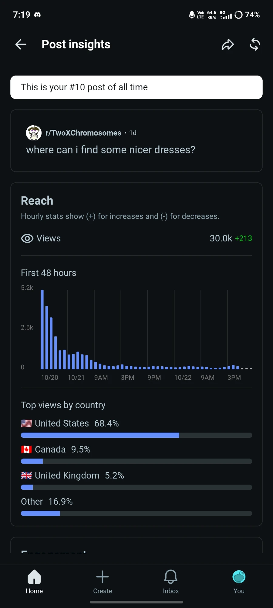
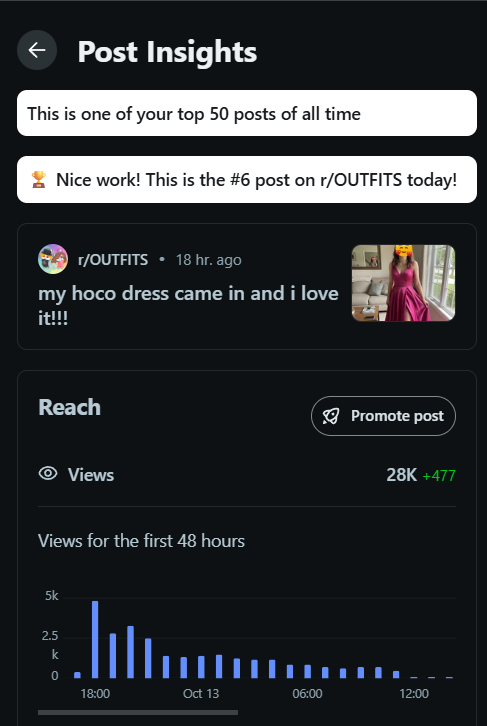
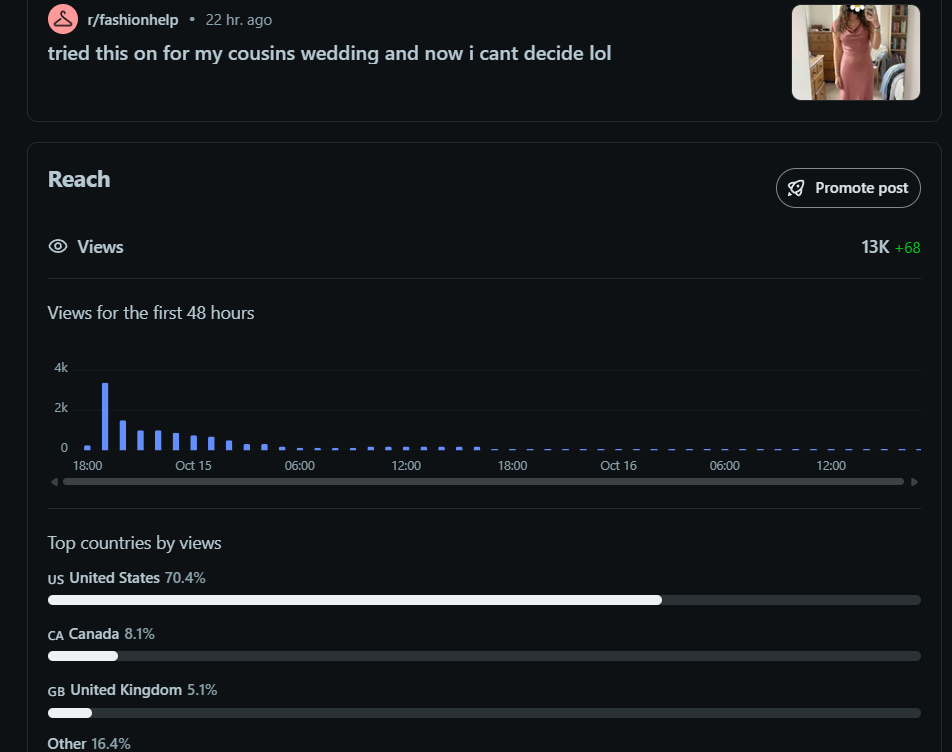
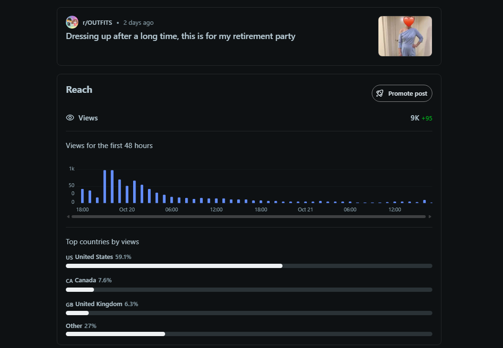
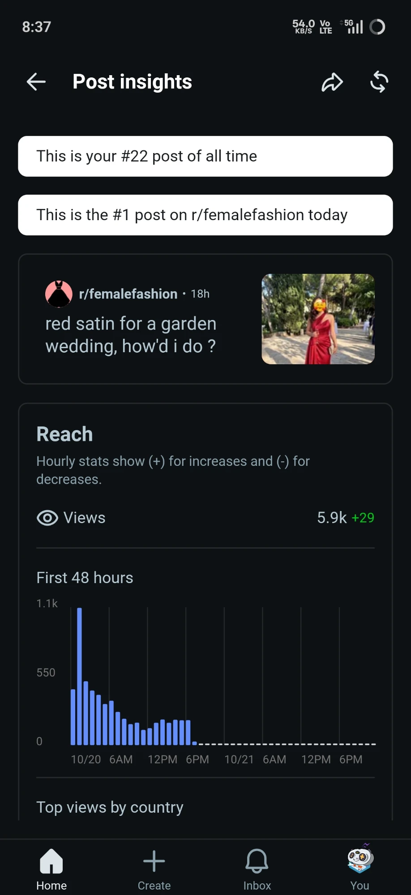
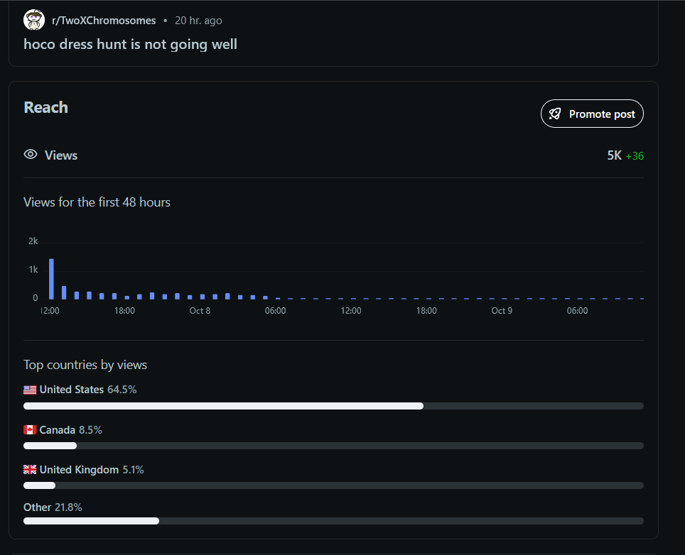
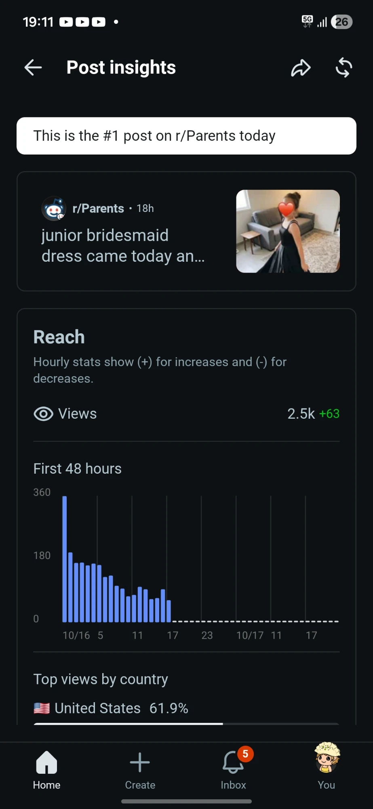
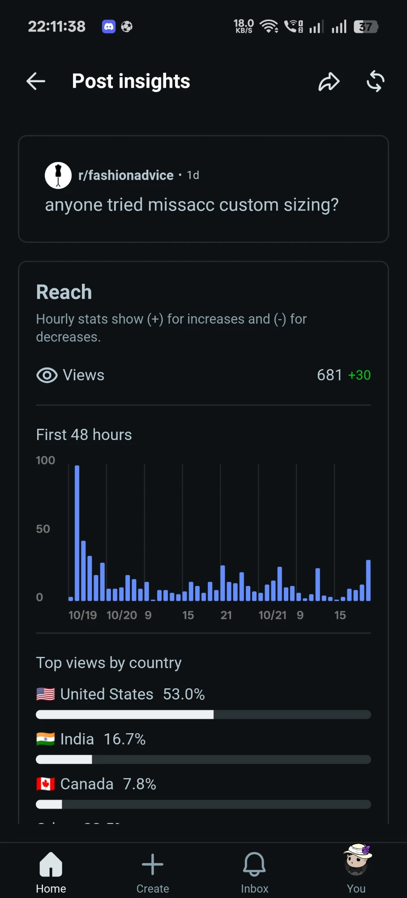

Reddit post insights ↗Where can I find some nicer dresses
#10post of all time on its account30KViews
68.4%US audience
The narrative around Missacc on Reddit keeps compounding: positive comments now outweigh the negative legacy record by nearly two to one, and this cycle the brand carried its own name in a post title for the first time.
Cycle five of the engagement. All 27 placements landed between 5 and 21 October, and the full footprint was re-measured in the 24 October monitoring sweep.
Last cycle the positive comment layer overtook the legacy negative record for the first time, 89 to 62. One sweep later the lead has nearly doubled. There are now 115 positive branded comments about Missacc on Reddit against 68 negative legacy posts, and the margin grew even though the legacy layer had its busiest window since spring.
The path here: 1 against 58 at Month 1, 35 against 58 at Month 2, 57 against 59, 89 against 62 last cycle, 115 against 68 today. The gap has gone from 2 to 27 to 47 in two cycles. The legacy side added 14 new records this window, its busiest stretch since spring, and the lead still nearly doubled, because the comment layer is compounding almost three times faster.
Every cycle we re-run the same monitoring sweep across everything Reddit has indexed about Missacc: every post and every comment that mentions the brand, ours and everyone else's. This is the full discoverable footprint a future customer lands on when they research the brand, and it is the scoreboard the whole engagement is measured against.
The structure underneath every number in this report: Reddit sentiment about Missacc lives in two separate layers that move at completely different speeds. The post layer is legacy community memory: old threads, indexed years ago, that we do not control. The comment layer is live conversation, and it is where we operate. The layer we work in keeps climbing; the layer we inherited is slowly softening.
The 68 negative post-level records are not a verdict on the current work. They are old community memory, concentrated in four legacy themes that were indexed long before this engagement began. They rank because they are old, not because they are fresh, and understanding what this layer is made of is what tells us it can be outweighed rather than fought head-on.
The largest block of legacy negativity: threads about refund requests, partial-refund offers, and return logistics. These are resolution threads: emotionally charged, heavily commented, and the slowest of all to fade from the index.
Custom-size and measurement-mismatch complaints sitting in old, high-authority wedding and bridesmaid threads. Fit is the most personal failure mode a dress brand can have, so these threads carry durable weight in community memory.
Delivery-time threads, wrong-address stories, and overseas-return friction. Cross-border logistics complaints age slowly because every new reader planning an event on a deadline finds them relevant again.
How-it-arrived posts comparing the product against listing photos. These are the hardest records to displace: they are visual, specific, and get cited inside other threads when the brand comes up.
The headline number, 68.5% positive, deserves to be opened up, because the composition underneath it is what makes it durable. Here is what the 168 tracked branded comments actually are: what kind of conversations they live in, how fast the layer is growing, and where the positive signal is concentrated.
Month 1 produced a single organic endorsement. Every sweep since has multiplied it, and the majority it built is now wide enough to carry the brand's own name.
Eight posts this cycle, and one of them is a first for the engagement: a post that carries the brand name in its title. The mix has shifted toward social proof, with dress reveals and try-ons carrying most of the surface and discovery asks framing the rest. The eight posts drew 19 organic replies and more than 94,000 views between them; the per-post insights are below.
| # | Date | Subreddit | Post | Format |
|---|---|---|---|---|
| Post 1 | 7 Oct | r/TwoXChromosomes | Hoco dress hunt is not going well | Discovery ask |
| Post 2 | 12 Oct | r/OUTFITS | My hoco dress came in and I love it | Social proof |
| Post 3 | 14 Oct | r/fashionhelp | Tried this on for my cousin's wedding and now I can't decide lol | Social proof |
| Post 4 | 15 Oct | r/Parents | Junior bridesmaid dress came today and she hasn't… | Social proof |
| Post 5 | 19 Oct | r/fashionadvice | Anyone tried Missacc custom sizing? | Brand ask |
| Post 6 | 19 Oct | r/OUTFITS | Dressing up after a long time, this is for my retirement party | Social proof |
| Post 7 | 19 Oct | r/femalefashion | Red satin for a garden wedding, how'd I do? | Style feedback |
| Post 8 | 20 Oct | r/TwoXChromosomes | Where can I find some nicer dresses | Discovery ask |
The reach behind each post, straight from Reddit's own analytics. Every card below carries the native insights capture for that post: views, the first-48-hours curve, and where the audience came from. Together the eight posts collected more than 94,000 views, with four of them crossing 5,000 and two crossing 25,000.

Reddit post insights ↗
Reddit post insights ↗
Reddit post insights ↗
Reddit post insights ↗
Reddit post insights ↗
Reddit post insights ↗
Reddit post insights ↗
Reddit post insights ↗Nineteen branded comments this cycle. Eight are replies inside our own threads, including two follow-ups keeping the brand-name post moving, and eleven landed on other members' threads, among them the first placements inside the wedding vertical and the first international placements of the engagement.
| # | Date | Subreddit | Thread | Type |
|---|---|---|---|---|
| 01 | 5 Oct | r/findfashion | Community thread | Branded comment |
| 02 | 7 Oct | r/TwoXChromosomes | Hoco dress hunt is not going well | Our thread |
| 03 | 7 Oct | r/Weddingattireapproval | Community thread | Branded comment |
| 04 | 14 Oct | r/fashionhelp | Tried this on for my cousin's wedding and now I can't decide lol | Our thread |
| 05 | 16 Oct | r/Parents | Junior bridesmaid dress came today and she hasn't… | Our thread |
| 06 | 18 Oct | r/womensfashion | Community thread | Branded comment |
| 07 | 19 Oct | r/WeddingDressTips | Community thread | Branded comment |
| 08 | 19 Oct | r/AskReddit | Community thread | Branded comment |
| 09 | 19 Oct | r/SGExams | Community thread | Branded comment |
| 10 | 19 Oct | r/womensfashion | Community thread | Branded comment |
| 11 | 19 Oct | r/style | Community thread | Branded comment |
| 12 | 19 Oct | r/femalefashion | Red satin for a garden wedding, how'd I do? | Our thread |
| 13 | 20 Oct | r/OUTFITS | Dressing up after a long time, this is for my retirement party | Our thread |
| 14 | 20 Oct | r/fashionadvice | Anyone tried Missacc custom sizing? | Our thread |
| 15 | 20 Oct | r/WeddingDressTips | Community thread | Branded comment |
| 16 | 21 Oct | r/womensfashion | Community thread | Branded comment |
| 17 | 21 Oct | r/fashionadvice | Anyone tried Missacc custom sizing? | Our thread |
| 18 | 21 Oct | r/adviceph | Community thread | Branded comment |
| 19 | 21 Oct | r/TwoXChromosomes | Where can I find some nicer dresses | Our thread |
Fourteen communities engaged this cycle, six of them entered for the first time.
Six readings of the Missacc narrative on Reddit at the close of this cycle.
Last cycle the positive comment layer overtook the legacy record by 2. This sweep the lead is 47, at 115 positive comments against 68 negative posts, and it widened through the legacy layer's busiest window since spring.
"Anyone tried Missacc custom sizing?" is the engagement's first brand-titled post, asking directly about the attribute the legacy record attacks hardest. It drew organic replies and ran clean: the higher-intent format four cycles of groundwork were building toward.
Comment-layer positive share rose for the fourth straight sweep, 55.6% to 65.5% to 66.9% to 68.5%. The narrative is shifting slowly, cycle by cycle, and it is shifting in the brand's favor.
37 new comment-layer mentions appeared this window against 19 comments we placed. September closed as the biggest month of the engagement at 38, and October is pacing right behind it with a week still to run.
First placements inside the wedding vertical itself, and the first international placements in Philippine and Singaporean communities. Meanwhile organic positives surfaced in spaces we have never touched, including a German-language wedding subreddit.
Positive branded comments sit in 42 subreddits, up from 32 last sweep and 22 the sweep before. No single subreddit, and no single moderator team, defines where Missacc exists on Reddit anymore.
This cycle delivered the moment the whole engagement has been building toward: the brand spoke in its own name on Reddit, and the room answered normally. The counterweight that flipped last sweep nearly doubled its lead, 115 positive comments against 68 negative legacy posts, the positive share rose for the fourth straight sweep, and the conversation now reaches 42 communities, some of which we have never placed in at all.
We keep learning what works. Social-proof posts, dress reveals and try-ons, now carry most of the surface and draw steady organic replies. The brand-ask format landed because it arrived in a prepared room, and we kept it moving with follow-ups inside the thread. And the new ground answered well: the wedding vertical accepted its first placements without friction, and the first international tests in the Philippines and Singapore opened a lane we intend to keep exploring.
Next cycle we extend all three: more brand-ask posts where the groundwork has made them safe, deeper presence in the wedding vertical, and steady placements that keep the narrative compounding in the brand's favor.